II. Les Bois
Plage formantique : 226–2 638 Hz (voyelles /u/ → /i/).
Grande diversité timbrale selon le type d'anche et le profil du tuyau.
Caractéristiques principales :
- Les anches doubles (hautbois, cor anglais, basson, contrebasson) partagent une zone
formantique commune autour de 900–1 200 Hz, avec une coloration vocalique /a/ caractéristique.
- Les clarinettes (tuyau cylindrique, harmoniques impairs) n'ont pas de formant fixe au
sens strict — le spectre dépend fortement du registre.
- Les flûtes (tuyau ouvert) n'ont pas non plus de formant fixe — le spectre décroît
linéairement au-dessus du fondamental.
Découverte clé : le cor anglais (F1=452 Hz) et le
basson (F1=495 Hz) sont dans la zone /o/ (400–600 Hz), aux côtés du cor (388 Hz)
et du violon (506 Hz). Le cor anglais et la clarinette Sib convergent à Δ=11 Hz (452 vs 463 Hz).
Le basson et le violon convergent également à Δ=11 Hz (495 vs 506 Hz).
Flûtes
La famille des flûtes se distingue par l'absence de formant fixe strict. Le spectre est dominé par la fondamentale, avec une décroissance des harmoniques suivant un profil quasi-linéaire en dB. Le Fp (centroïde spectral) permet néanmoins de caractériser la zone d'énergie principale.
Petite flûte
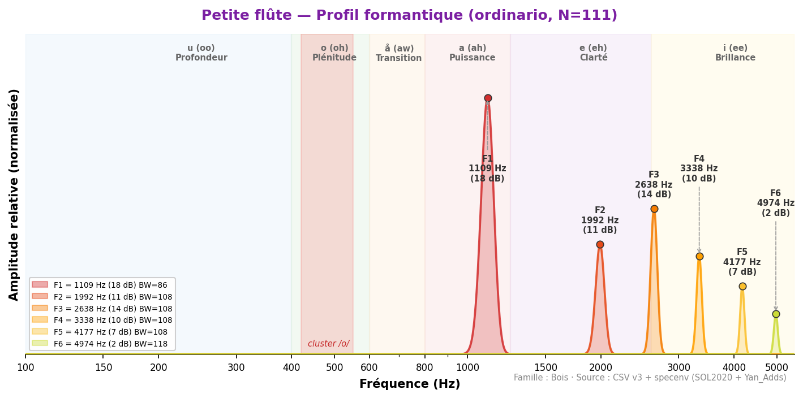
Instrument le plus aigu spectralement de l'orchestre. Comme la grande flûte,
il ne possède pas de formant fixe au sens strict — son énergie spectrale est concentrée dans les
hautes fréquences (F1=1 109 Hz, zone /e/). Backus cite ~3 400 Hz correspondant au Fp ou au sommet
de la courbe de rayonnement. Fp non calculé dans le corpus actuel.
La variation dynamique est marquée : la piccolo projette dans les aigu extrêmes en forte.
Valeurs de référence (sources académiques)
| Backus (1969) | ~3 400 | — | — | — | — | — | ~ |
| Yan_Adds | 2 336 ±852 | 3 866 ±790 | 5 291 | 6 931 | i (ee) | 111 | ✓ |
Analyse spectrale complète (toutes techniques sustained)
| flatterzunge | 36 | 1 292 | 2 153 | 2 853 | 3 348 | 4 113 | 4 759 |
| ordinario | 111 | 1 109 | 1 992 | 2 638 | 3 338 | 4 177 | 4 974 |
Doublures recommandées
| Flûte | 1 109 | 743 | Δ=366 Hz | Complémentaire | Octave | Piccolo F1=1109, flûte F1=743 — piccolo sonne une octave au-dessus |
| Violon | 1 109 | 506 | Δ=603 Hz | Complémentaire | Complémentaire | Renforcement zone aiguë — complémentarité large bande |
Flûte
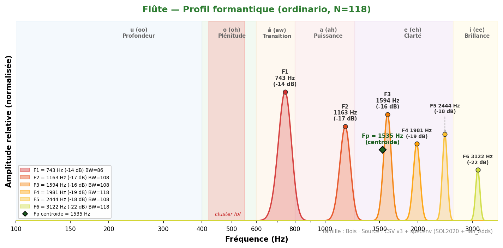
La flûte ne possède pas de formant fixe (Meyer, Giesler) : son spectre
varie fortement avec le registre et le souffle. F1 spectral strict = 743 Hz (zone /å/).
Écart entre sources : Backus (~1 700 Hz) vs SOL2020 (743 Hz strict, Fp=1 535 Hz).
Le Fp centroïde à 1 535 Hz est plus stable que F1 (σ F1=480 Hz vs σ Fp≈150 Hz).
La flûte est l'instrument harmoniquement le plus plastique de l'orchestre.
◆ Fp (centroïde) = 1535 Hz
Valeurs de référence (sources académiques)
| Backus (1969) | ~1 700 | — | — | — | — | — | ~ |
| Giesler (1985) | — | — | — | — | pas de formants fixes | — | — |
| Meyer (2009) | PAS DE FORMANTS FIXES | — | — | — | o/u variable | — | — |
| SOL2020 | 1 354 ±480 | 1 987 ±143 | 4 210 | — | (variable) | 41 | ~ |
Analyse spectrale complète (toutes techniques sustained)
| aeolian | 13 | 344 | 808 | 1 130 | 1 497 | 1 884 | 2 282 |
| aeolian_and_ordinario | 114 | 614 | 1 087 | 1 475 | 1 927 | 2 347 | 2 778 |
| aeolian_to_ordinario | 10 | 786 | 1 184 | 1 583 | 1 927 | 2 433 | 3 176 |
| chromatic_scale | 2 | 937 | 1 454 | 1 970 | 2 552 | — | — |
| crescendo | 33 | 624 | 1 120 | 1 540 | 1 970 | 2 530 | 3 348 |
| crescendo_to_decrescendo | 37 | 657 | 1 120 | 1 540 | 2 046 | 2 476 | 3 155 |
| decrescendo | 33 | 754 | 1 195 | 1 604 | 1 981 | 2 390 | 3 004 |
| discolored_fingering | 34 | 711 | 1 141 | 1 550 | 2 056 | 2 638 | 3 747 |
| flatterzunge | 116 | 571 | 1 066 | 1 518 | 1 916 | 2 315 | 2 627 |
| flatterzunge_to_ordinario | 33 | 711 | 1 109 | 1 550 | 1 938 | 2 347 | 2 767 |
| harmonic_fingering | 38 | 861 | 1 410 | 1 755 | 2 272 | 2 832 | 4 016 |
| jet_whistle | 1 | 2 035 | 2 379 | 2 584 | 2 950 | 3 273 | 3 768 |
| key_click | 15 | 398 | 786 | 1 120 | 1 421 | 1 830 | 2 186 |
| multiphonics | 32 | 431 | 872 | 1 270 | 1 604 | 1 938 | 2 476 |
| note_lasting | 37 | 624 | 1 066 | 1 561 | 2 003 | 2 509 | 3 327 |
| ordinario | 118 | 743 | 1 163 | 1 594 | 1 981 | 2 444 | 3 122 |
| ordinario_quartertones | 111 | 689 | 1 141 | 1 626 | 1 970 | 2 293 | 2 896 |
| ordinario_to_aeolian | 37 | 549 | 1 087 | 1 454 | 1 970 | 2 541 | 3 165 |
| ordinario_to_flatterzunge | 33 | 743 | 1 260 | 1 594 | 2 024 | 2 466 | 2 638 |
| pizzicato | 20 | 398 | 711 | 1 217 | 1 604 | 2 056 | 2 788 |
| play_and_sing | 21 | 377 | 786 | 1 174 | 1 518 | 1 852 | 2 261 |
| play_and_sing_unison | 17 | 409 | 797 | 1 195 | 1 561 | 1 949 | 2 369 |
| sforzato | 70 | 743 | 1 184 | 1 615 | 2 003 | 2 455 | 3 112 |
| staccato | 37 | 571 | 1 195 | 1 615 | 2 067 | 2 606 | 3 510 |
| tongue_ram | 15 | 194 | 581 | 1 217 | 1 723 | 3 068 | 5 566 |
| trill_major_second_up | 34 | 732 | 1 378 | 1 744 | 1 981 | 1 884 | 2 035 |
| trill_minor_second_up | 38 | 764 | 1 443 | 1 863 | 1 798 | 2 110 | 2 143 |
| whistle_tones | 10 | 151 | 463 | 1 034 | 1 497 | 1 938 | 2 519 |
| whistle_tones_sweeping | 26 | 861 | 1 163 | 1 572 | 1 960 | 2 401 | 2 885 |
Doublures recommandées
| Hautbois | 743 | 743 | Δ=0 Hz | Quasi-parfaite ★ | Unisson | Δ=0 Hz — unisson formantique parfait, 2 familles |
| Violon | 743 | 506 | Δ=237 Hz | Complémentaire | Unisson | Flûte /å/, violon /o/ — complémentarité medium |
| Clarinette Sib | 743 | 463 | Δ=280 Hz | Complémentaire | Unisson | Flûte /å/ + clarinette /o/ — couverture large bande |
Flûte basse
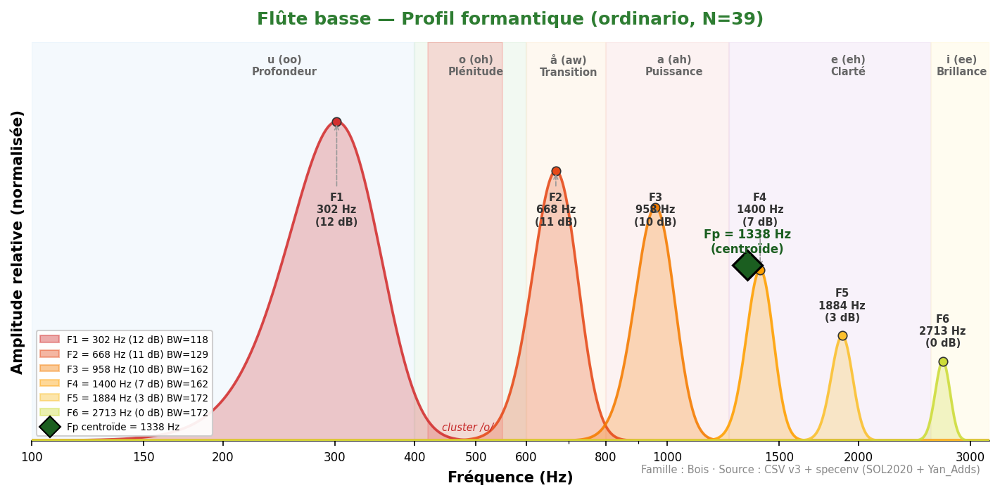
Son chaud et soufflé, plus riche en harmoniques que la grande flûte.
F1=301 Hz dans la zone /u/ (profondeur). Timbre velouté avec une composante d'air caractéristique.
Fp=1 338 Hz capture la résonance principale du tuyau.
◆ Fp (centroïde) = 1338 Hz
Valeurs de référence (sources académiques)
| Yan_Adds | 301 ±92 | 824 ±342 | 1 623 | 2 681 | u (oo) | 82 | — |
Analyse spectrale complète (toutes techniques sustained)
| aeolian | 13 | 280 | 603 | 915 | 1 378 | 1 873 | 3 090 |
| flatterzunge | 39 | 280 | 624 | 1 066 | 1 550 | 1 927 | 3 058 |
| ordinario | 39 | 301 | 668 | 958 | 1 400 | 1 884 | 2 713 |
Doublures recommandées
| Cor anglais | 301 | 452 | Δ=151 Hz | Bonne | Unisson | Complémentarité /u/–/o/, couleur sombre grave |
| Clarinette basse | 301 | 323 | Δ=22 Hz | Excellente | Unisson | Δ=22 Hz — convergence /u/, fusion timbrale profonde |
Flûte contrebasse
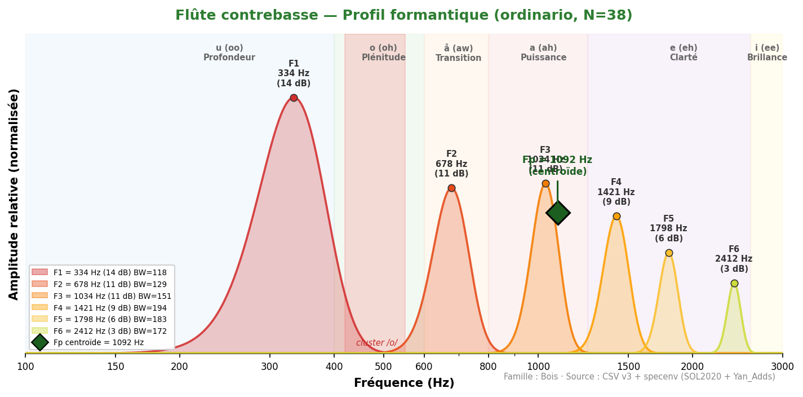
Son très grave et breathy, à la limite du souffle perceptible.
F1=334 Hz (zone /u/). Timbre profond et enveloppant, souvent utilisé pour ses qualités texturales.
Instrument rare, principalement utilisé dans la musique contemporaine.
◆ Fp (centroïde) = 1092 Hz
Valeurs de référence (sources académiques)
| Yan_Adds | 334 ±95 | 1 082 ±287 | 1 853 | — | u (oo) | 44 | — |
Analyse spectrale complète (toutes techniques sustained)
| aeolian | 13 | 226 | 592 | 1 023 | 1 249 | 1 593 | 1 970 |
| flatterzunge | 39 | 205 | 581 | 1 023 | 1 292 | 1 798 | 2 422 |
| ordinario | 37 | 334 | 678 | 1 034 | 1 421 | 1 798 | 2 412 |
Doublures recommandées
| Contrebasse | 334 | 172 | Δ=162 Hz | Bonne | Unisson | Zone graves /u/ partagée |
| Tuba basse | 334 | 226 | Δ=108 Hz | Bonne | Unisson | Renforcement des graves extrêmes |
Anches doubles
Les instruments à anche double (hautbois, cor anglais, basson, contrebasson) partagent un profil formantique similaire avec une zone d'énergie principale autour de 900–1 200 Hz. Cette famille acoustique explique leur tendance à fusionner naturellement dans l'orchestre.
Hautbois
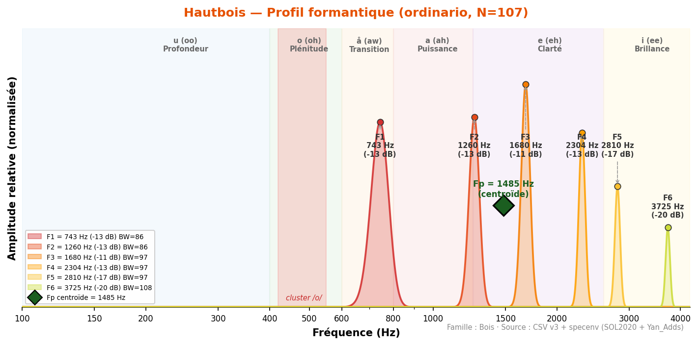
Son nasal et pénétrant, grande projection. Variabilité importante entre sources :
Backus (1 300), Meyer/Giesler (~1 100), SOL2020 (1 460) — écart maximal 360 Hz. Cette divergence
s'explique par la dissociation entre F1 spectral strict (743 Hz, zone /å/) et le Fp (1 460 Hz,
zone de nasalité et d'intensité caractéristique du hautbois).
L'anche double produit un spectre riche avec une coloration vocale /a/ médium.
◆ Fp (centroïde) = 1485 Hz
Valeurs de référence (sources académiques)
| Backus (1969) | ~1 300 | — | — | — | — | — | ~ |
| Giesler (1985) | ~1 100 | ~2 800 | — | — | a-ähnlich | — | ~ |
| Meyer (2009) | ~1 100 | — | — | — | a (ah) | — | ~ |
| SOL2020 | 743 ±378 | 1 460 ±452 | 3 177 | — | å/a | 41 | ~ |
Analyse spectrale complète (toutes techniques sustained)
| blow_without_reed | 13 | 1 152 | 1 550 | 1 992 | 2 692 | 3 725 | 5 545 |
| chromatic_scale | 2 | 657 | 894 | 1 206 | 1 475 | 1 755 | 2 422 |
| crescendo | 33 | 786 | 1 324 | 1 863 | 2 509 | 3 359 | 4 404 |
| crescendo_to_decrescendo | 33 | 743 | 1 270 | 1 669 | 2 110 | 2 670 | 3 510 |
| decrescendo | 33 | 700 | 1 260 | 1 766 | 2 476 | 2 993 | 3 962 |
| discolored_fingering | 21 | 635 | 1 141 | 1 475 | 1 830 | 2 379 | 3 704 |
| double_trill_major_second_up | 2 | 1 130 | 1 744 | 2 110 | 2 315 | 3 187 | 4 587 |
| double_trill_minor_second_up | 14 | 678 | 1 357 | 2 024 | 2 024 | 2 530 | 3 004 |
| flatterzunge | 36 | 797 | 1 346 | 1 852 | 2 627 | 3 305 | 4 231 |
| harmonic_fingering | 13 | 883 | 1 270 | 1 561 | 2 121 | 2 993 | 3 994 |
| key_click | 9 | 732 | 1 195 | 1 776 | 2 153 | 2 552 | 3 004 |
| kiss | 10 | 678 | 1 346 | 2 003 | 2 616 | 3 208 | 4 285 |
| lip_glissando | 36 | 829 | 1 518 | 2 078 | 2 627 | 3 445 | 4 264 |
| multiphonics | 77 | 1 012 | 1 486 | 1 981 | 2 444 | 3 112 | 3 941 |
| note_lasting | 34 | 840 | 1 389 | 1 927 | 2 412 | 3 327 | 4 619 |
| ordinario | 107 | 743 | 1 260 | 1 680 | 2 304 | 2 810 | 3 725 |
| ordinario_quartertones | 102 | 764 | 1 292 | 1 755 | 2 272 | 2 853 | 3 984 |
| sforzato | 66 | 775 | 1 270 | 1 669 | 2 196 | 2 982 | 3 951 |
| staccato | 33 | 786 | 1 249 | 1 636 | 2 067 | 3 068 | 3 768 |
| trill_major_second_up | 33 | 668 | 1 227 | 1 733 | 2 218 | 2 778 | 3 122 |
| trill_minor_second_up | 34 | 754 | 1 346 | 1 884 | 2 186 | 2 530 | 3 025 |
| vibrato | 35 | 829 | 1 314 | 1 744 | 2 240 | 3 478 | 4 393 |
Doublures recommandées
| Flûte | 743 | 743 | Δ=0 Hz | Quasi-parfaite ★ | Unisson | Δ=0 Hz — unisson formantique parfait |
| Cor anglais | 743 | 452 | Δ=291 Hz | Complémentaire | Unisson | Hautbois /å/ + cor anglais /o/ — complémentarité bois |
| Violon | 743 | 506 | Δ=237 Hz | Complémentaire | Unisson | Enrichissement spectral /å/–/o/ |
Cor anglaisCluster /o/
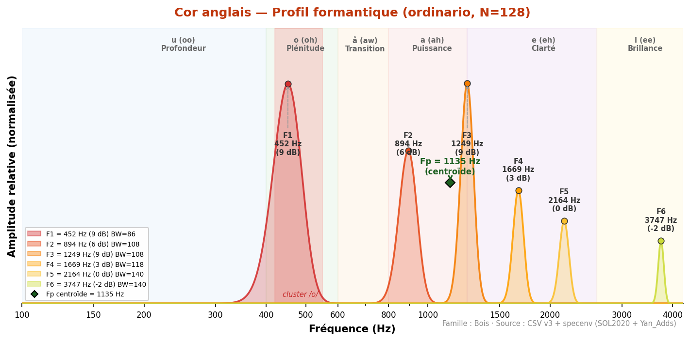
Son plus sombre et mélancolique que le hautbois. F1=452 Hz tombe dans la
zone /o/ — ce qui explique sa convergence naturelle avec le cor (F1=388 Hz, Δ=64 Hz),
le basson (F1=495 Hz, Δ=43 Hz) et la clarinette Sib (F1=463 Hz, Δ=11 Hz).
Backus cite ~930 Hz correspondant vraisemblablement au Fp ou F2. Fp=1 135 Hz.
◆ Fp (centroïde) = 1135 Hz
Valeurs de référence (sources académiques)
| Backus (1969) | ~930 | — | — | — | — | — | ~ |
| Meyer (2009) | ~600 | — | — | — | å (aw) | — | — |
| Yan_Adds | 452 ±163 | 1 045 ±308 | 2 205 | — | o (oh) | 78 | ✓ |
Analyse spectrale complète (toutes techniques sustained)
| flatterzunge | 32 | 506 | 991 | 1 400 | 2 110 | 3 704 | 4 317 |
| ordinario | 128 | 452 | 894 | 1 249 | 1 669 | 2 164 | 3 747 |
| vibrato | 96 | 420 | 840 | 1 249 | 1 669 | 2 347 | 3 747 |
Doublures recommandées
| Cor | 452 | 388 | Δ=64 Hz | Excellente | Unisson | Cor anglais + Cor — zone /o/ commune |
| Basson | 452 | 495 | Δ=43 Hz | Excellente | Unisson | Famille /o/ — bois graves homogènes |
| Violoncelle | 452 | 205 | Δ=247 Hz | Complémentaire | Octave | Cor anglais /o/, violoncelle /u/ — complémentarité |
| Clarinette Sib | 452 | 463 | Δ=11 Hz | Quasi-parfaite | Unisson | Δ=11 Hz — convergence /o/ quasi-parfaite |
BassonCluster /o/
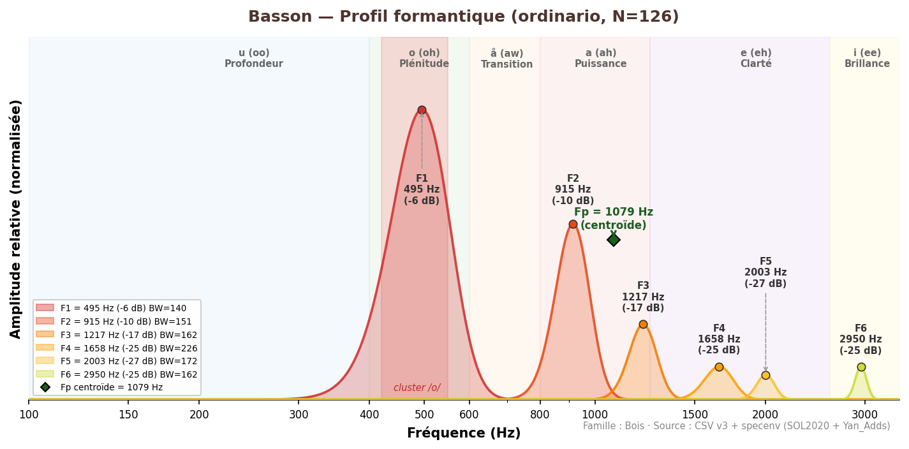
Pivot timbral de l'orchestre (Meyer). F1=495 Hz au cœur de la zone /o/.
Accord unanime des 4 sources : Giesler (500) = Backus (440–500) = Meyer (~500) = SOL2020 (495 Hz).
Convergences clés : Δ=11 Hz avec le violon (F1=506 Hz), Δ=43 Hz avec le cor anglais (F1=452 Hz),
Δ=107 Hz avec le cor (F1=388 Hz). Fp=1 079 Hz.
◆ Fp (centroïde) = 1079 Hz
Valeurs de référence (sources académiques)
| Backus (1969) | 440–500 | — | — | — | — | — | ✓ |
| Giesler (1985) | 500 | — | — | — | o-ähnlich | — | ✓ |
| Meyer (2009) | ~500 | ~1 000 | — | — | o (oh) | — | ✓ |
| SOL2020 | 502 ±96 | 1 097 ±238 | 2 089 | — | o (oh) | 41 | ✓ |
Analyse spectrale complète (toutes techniques sustained)
| blow_without_reed | 13 | 528 | 937 | 1 227 | 1 690 | 2 013 | 3 047 |
| chromatic_scale | 2 | 571 | 990 | 1 206 | 1 884 | — | — |
| crescendo | 37 | 431 | 764 | 1 130 | 1 561 | 1 916 | 2 487 |
| crescendo_to_decrescendo | 41 | 377 | 689 | 1 141 | 1 583 | 1 927 | 2 304 |
| decrescendo | 37 | 420 | 775 | 1 152 | 1 529 | 1 873 | 2 746 |
| flatterzunge | 32 | 495 | 915 | 1 227 | 1 626 | 1 895 | 2 186 |
| glissando_with_throat | 42 | 528 | 948 | 1 217 | 1 712 | 2 078 | 4 317 |
| harmonic_fingering | 8 | 409 | 743 | 1 184 | 1 529 | 2 046 | 4 554 |
| key_click | 19 | 194 | 495 | 926 | 1 260 | 1 626 | 2 250 |
| multiphonics | 56 | 431 | 689 | 1 195 | 1 518 | 1 852 | 2 110 |
| note_lasting | 38 | 484 | 872 | 1 249 | 1 647 | 1 949 | 2 121 |
| ordinario | 126 | 495 | 915 | 1 217 | 1 658 | 2 003 | 2 950 |
| ordinario_quartertones | 119 | 441 | 851 | 1 217 | 1 658 | 2 056 | 2 692 |
| sforzato | 78 | 484 | 894 | 1 249 | 1 626 | 2 013 | 2 724 |
| staccato | 41 | 495 | 861 | 1 206 | 1 658 | 1 970 | 2 143 |
| trill_major_second_up | 37 | 495 | 883 | 1 217 | 1 572 | 1 830 | 2 078 |
| trill_minor_second_up | 39 | 517 | 937 | 1 249 | 1 583 | 2 013 | 2 110 |
| vibrato | 41 | 377 | 689 | 1 195 | 1 561 | 1 970 | 2 606 |
Doublures recommandées
| Violon | 495 | 506 | Δ=11 Hz | Quasi-parfaite | Unisson | Δ=11 Hz — basson F1=495, violon F1=506, convergence /o/ |
| Cor anglais | 495 | 452 | Δ=43 Hz | Excellente | Unisson | Famille /o/ — bois graves |
| Cor | 495 | 388 | Δ=107 Hz | Bonne | Unisson | Zone /o/ — Δ=107 Hz, surveiller le masquage |
| Trombone | 495 | 237 | Δ=258 Hz | Complémentaire | Unisson | Basson /o/, trombone /u/ — complémentarité classique |
Contrebasson
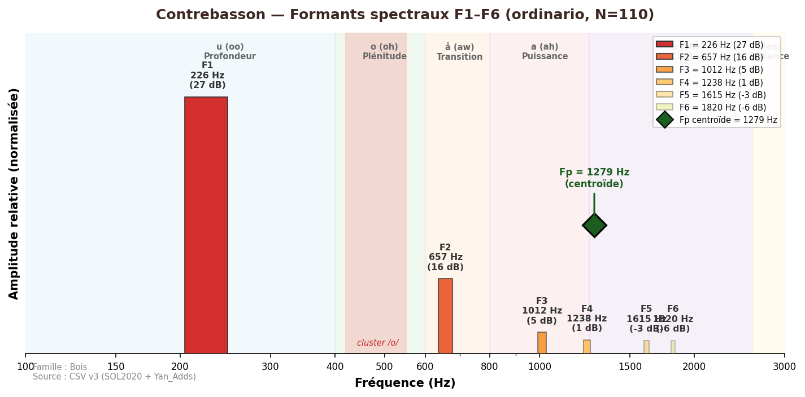
Son très grave et bourdonnant, fondation des bois graves.
F1=226 Hz (zone /u/), identique au tuba basse et tuba contrebasse — unisson formantique
parfait entre ces trois instruments de différentes familles. Fp=1 279 Hz.
Technique analysée : non-vibrato uniquement (pas d'ordinario dans la base SOL2020/Yan_Adds).
◆ Fp (centroïde) = 1279 Hz
⚠ Technique analysée : non-vibrato (pas d'ordinario disponible dans la base).
Valeurs de référence (sources académiques)
| Yan_Adds (non-vibrato) | 226 ±98 | 771 ±344 | 1 463 | — | u (oo) | 44 | — |
Analyse spectrale complète (toutes techniques sustained)
| non-vibrato | 106 | 226 | 657 | 1 012 | 1 238 | 1 615 | 1 820 |
Doublures recommandées
| Tuba basse | 226 | 226 | Δ=0 Hz | Quasi-parfaite ★ | Unisson | Δ=0 Hz — unisson formantique /u/ |
| Tuba contrebasse | 226 | 226 | Δ=0 Hz | Quasi-parfaite ★ | Octave | Δ=0 Hz — unisson /u/ cuivres graves |
| Contrebasse | 226 | 172 | Δ=54 Hz | Excellente | Unisson | Fondation grave bois-cordes |
Clarinettes
La famille des clarinettes (tuyau cylindrique fermé) présente un comportement acoustique radicalement différent des autres bois : suppression des harmoniques pairs, dominance des partiels impairs. Cette spécificité rend difficile la définition d'un formant fixe et explique les divergences entre sources académiques.
Clarinette en Mib
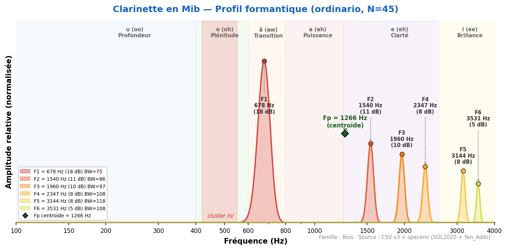
Son brillant et incisif, plus perçant que la clarinette Sib.
F1=678 Hz (zone /å/). La clarinette Mib est l'instrument le plus aigu de la famille.
Son spectre est dominé par les harmoniques impairs (tuyau cylindrique fermé),
mais moins marqué que la Sib car le registre aigu domine.
◆ Fp (centroïde) = 1266 Hz
Valeurs de référence (sources académiques)
| Yan_Adds | 678 ±211 | 1 540 ±360 | 2 849 | — | å (aw) | 56 | — |
Analyse spectrale complète (toutes techniques sustained)
| aeolian | 19 | 883 | 1 529 | 2 003 | 2 218 | 2 584 | 2 929 |
| aeolian-flatterzunge | 19 | 355 | 1 787 | 2 272 | 2 702 | 3 359 | 3 930 |
| ordinario | 45 | 678 | 1 540 | 1 960 | 2 347 | 3 144 | 3 531 |
Doublures recommandées
| Petite flûte | 678 | 1 109 | Δ=431 Hz | Complémentaire | Complémentaire | Cl. Mib /å/, Piccolo en /e/ — complémentarité aiguë |
| Violon | 678 | 506 | Δ=172 Hz | Bonne | Unisson | Zone /å/–/o/ partagée |
Clarinette en SibCluster /o/
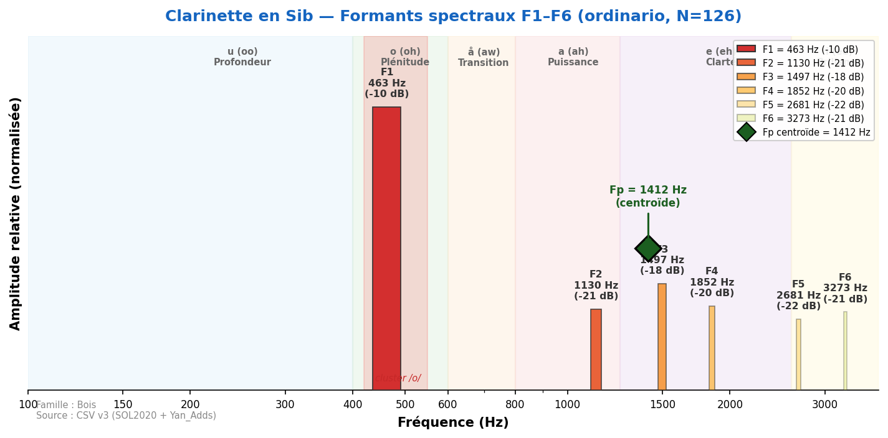
Découverte majeure : pas de formant fixe.
Le pic spectral suit la fondamentale (ratio 1.0) ou le 3e harmonique (ratio 3.0) — dominance
des harmoniques impairs (tuyau cylindrique fermé). Backus (1 500 Hz) et Meyer (1 500 Hz)
capturent le registre clairon, Giesler (3 000–4 000 Hz) l'extrême aigu.
F1 spectral strict = 463 Hz (1er mode du tuyau cylindrique). Le Fp centroïde à 1 412 Hz
est 4.7× plus stable que F2. F2 varie de 549 Hz (chalumeau) à 2 638 Hz (registre aigu).
◆ Fp (centroïde) = 1412 Hz
Valeurs de référence (sources académiques)
| Backus (1969) | 1 500 | — | — | — | — | — | — |
| Giesler (1985) | 3 000–4 000 | — | — | — | i-ähnlich | — | — |
| Meyer (2009) | 1 500 | — | — | — | (variable) | — | — |
| SOL2020 | 1 016 ±478 | 1 804 ±463 | 2 485 ±895 | — | (variable) | 41 | — |
Analyse spectrale complète (toutes techniques sustained)
| aeolian_and_ordinario | 28 | 280 | 851 | 1 421 | 2 584 | 3 165 | 3 671 |
| crescendo | 41 | 528 | 1 238 | 1 755 | 2 326 | 3 101 | 3 801 |
| crescendo_to_decrescendo | 45 | 517 | 1 120 | 1 497 | 1 927 | 2 196 | 2 562 |
| decrescendo | 41 | 560 | 1 141 | 1 550 | 2 358 | 2 487 | 3 499 |
| flatterzunge | 126 | 495 | 1 152 | 1 658 | 2 132 | 2 907 | 3 295 |
| flatterzunge_high_register | 10 | 1 830 | 3 521 | 5 222 | 5 943 | — | — |
| glissando | 37 | 732 | 1 464 | 2 153 | 2 842 | 3 607 | 3 628 |
| key_click | 20 | 269 | 657 | 1 023 | 1 421 | 1 820 | 2 961 |
| multiphonics | 35 | 312 | 775 | 1 130 | 1 594 | 2 390 | 3 047 |
| note_lasting | 46 | 592 | 1 335 | 1 873 | 2 315 | 2 950 | 3 338 |
| ordinario | 126 | 463 | 1 130 | 1 497 | 1 852 | 2 681 | 3 273 |
| ordinario_high_register | 10 | 1 863 | 3 714 | 5 254 | 2 659 | 3 316 | 3 671 |
| ordinario_quartertones | 123 | 452 | 1 055 | 1 443 | 1 744 | 2 250 | 3 176 |
| sforzato | 86 | 560 | 1 206 | 1 830 | 2 358 | 3 112 | 3 542 |
| staccato | 45 | 528 | 1 314 | 1 766 | 2 347 | 2 788 | 3 510 |
| trill_major_second_up | 38 | 452 | 894 | 1 238 | 1 572 | 2 046 | 3 068 |
| trill_minor_second_up | 40 | 474 | 990 | 1 367 | 1 669 | 2 067 | 2 875 |
Doublures recommandées
| Cor anglais | 463 | 452 | Δ=11 Hz | Quasi-parfaite | Unisson | Δ=11 Hz — convergence /o/ quasi-parfaite |
| Alto | 463 | 377 | Δ=86 Hz | Bonne | Unisson | Zone /o/ commune — risque de masquage à surveiller |
| Hautbois | 463 | 743 | Δ=280 Hz | Complémentaire | Unisson | Cl. Sib /o/ + hautbois /å/ — complémentarité bois |
Clarinette basse en Sib
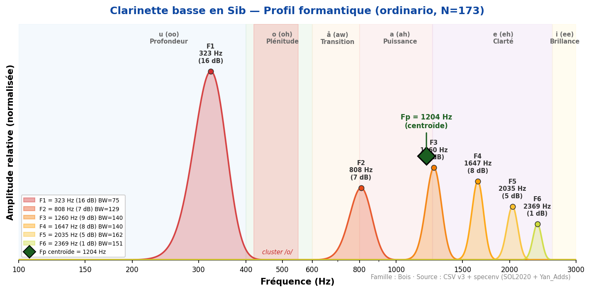
Son profond et velouté, riche dans le grave.
F1=323 Hz (zone /u/). Le registre chalumeau possède une couleur très distinctive.
Comportement analogue à la clarinette Sib mais transposé d'une octave vers le grave.
◆ Fp (centroïde) = 1204 Hz
Valeurs de référence (sources académiques)
| Yan_Adds | 323 ±87 | 905 ±389 | 1 716 | — | u (oo) | 72 | — |
Analyse spectrale complète (toutes techniques sustained)
| aeolian | 23 | 635 | 1 410 | 1 798 | 2 164 | 2 530 | 3 704 |
| flatterzunge | 28 | 334 | 786 | 1 389 | 1 852 | 2 186 | 2 606 |
| ordinario | 173 | 323 | 807 | 1 260 | 1 647 | 2 035 | 2 369 |
Doublures recommandées
| Trombone basse | 323 | 258 | Δ=65 Hz | Excellente | Unisson | Convergence /u/ — zone grave commune |
| Clarinette Sib | 323 | 463 | Δ=140 Hz | Bonne | Octave | Cl. Sib sonne une octave au-dessus |
| Contrebasson | 323 | 226 | Δ=97 Hz | Bonne | Unisson | Zone /u/ grave partagée |
Clarinette contrebasse en Sib
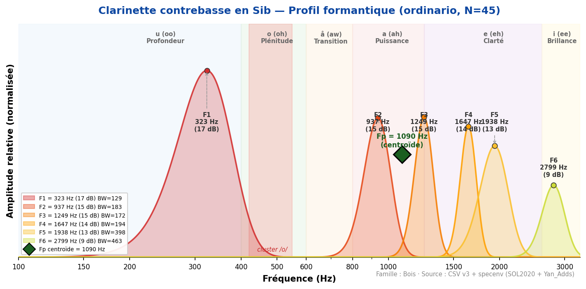
Son extrêmement grave, puissant et bourdonnant.
F1=323 Hz identique à la clarinette basse, mais F2=947 Hz montre une résonance plus
développée dans le medium. Timbre massif et enveloppant. Instrument rare.
◆ Fp (centroïde) = 1090 Hz
Valeurs de référence (sources académiques)
| Yan_Adds | 323 ±95 | 937 ±290 | 1 791 | — | u (oo) | 38 | — |
Analyse spectrale complète (toutes techniques sustained)
| aeolian | 23 | 366 | 1 227 | 1 647 | 1 906 | 2 595 | 2 961 |
| ordinario | 45 | 323 | 937 | 1 249 | 1 647 | 1 938 | 2 799 |
Doublures recommandées
| Contrebasson | 323 | 226 | Δ=97 Hz | Bonne | Unisson | Doublure contrebasse des bois |
| Tuba basse | 323 | 226 | Δ=97 Hz | Bonne | Unisson | Fondation grave commune /u/ |
Source des données : formants_all_techniques.csv + formants_yan_adds.csv — pipeline v22 validé (Δ=0 Hz, 16/16 instruments). Basson+sourdine et Hautbois+sourdine exclus de cette étude.
Références : Backus (1969) · Giesler (1985) · Meyer (2009) · SOL2020 IRCAM.